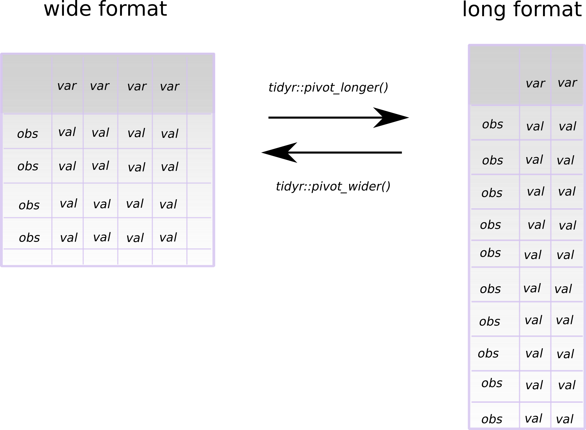

4_wrangle.Rmd
library(PAGES)In this last exercise I show some functionality of the tidyr (Wickham 2021) package.
From the website:
"The goal of tidyr is to help you create tidy data. Tidy data is data where:
Tidy data describes a standard way of storing data that is used wherever possible throughout the tidyverse."
This looks like this:
obs = observation, var = variable and val = value
The following format of the data frame (or tibble (Müller and Wickham 2021) in the tidyverse universe) is a format that we are used to see in publications. Here count data of all different elements each occupy their own column (i.e., variable).
#> # A tibble: 6 x 5
#> Height landplant_pollen landplant_spores environment_aquat… environment_terre…
#> <dbl> <int> <int> <int> <int>
#> 1 1600 31 277 65 308
#> 2 1365 27 262 114 289
#> 3 1125 22 282 40 304
#> 4 1045 24 276 44 300
#> 5 965 29 276 75 305
#> 6 885 19 284 70 303However, we can also describe this data in a long format, as the class of the values in the cells for the palynomorphs are all the same (i.e., they are all integer count data). So, how can we make a long format data frame out of this?
For such operations, we can use the tidyr (Wickham 2021) function pivot_longer().

However, the question is a bit of trick question, as the variable names also contains information. Actually, there are additional variables stashed in the column names. In this case, the word in the variable name before the subscript _ is another categorical variable dividing the the label in two subsets; "landplant"; denoting whether the variable label describes a characteristic of land plant community composition (either pollen or spores), and "environment"; denoting whether the variable label describes a characteristic of the environment (i.e., is the palynomorph an aquatic or terrestrial component?).
To achieve the previous describe transformation to a long format data frame, and the extraction of the information in the column names, we construct the following call.
# long format
pivot_longer(
data = kuhjoch,
cols = -Height,
names_to = c("type", "label"),
values_to = "count",
names_sep = "_"
)
#> # A tibble: 180 x 4
#> Height type label count
#> <dbl> <chr> <chr> <int>
#> 1 1600 landplant pollen 31
#> 2 1600 landplant spores 277
#> 3 1600 environment aquatic 65
#> 4 1600 environment terrestrial 308
#> 5 1365 landplant pollen 27
#> 6 1365 landplant spores 262
#> 7 1365 environment aquatic 114
#> 8 1365 environment terrestrial 289
#> 9 1125 landplant pollen 22
#> 10 1125 landplant spores 282
#> # … with 170 more rowsNote that in this call we select column with -Height, so we take everything except the height variable. Also note that the vector of two elements for the names_to argument defines the two new categorical columns and name_sep controls how the original column names are split ("_").